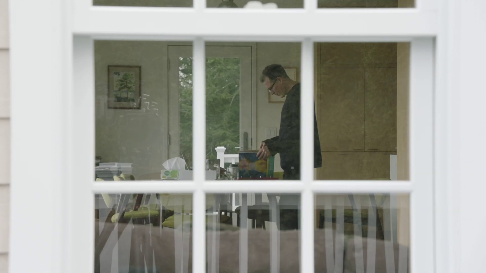

De Canvasconnectie

Hoe breng je hedendaagse kunst op televisie zonder haar te versimpelen? De Canvasconnectie koos voor een eigenzinnige aanpak. Voor elke reeks stelde de redactie een omvangrijk album samen met een selectie van tentoonstellingen, concerten, films en andere culturele evenementen in binnen- en buitenland. Met dat boek trok een kleine filmploeg naar het atelier of de werkplek van een kunstenaar. Die vertelde niet alleen over het eigen werk, maar koos ook uit het album wat hem of haar nieuwsgierig maakte. Zo ontstonden onverwachte verbindingen tussen kunstenaars, disciplines en ideeën.
Vanaf 2011 groeide De Canvasconnectie uit tot een vaste waarde op Canvas. De reeks bracht zowel gevestigde namen als minder bekende kunstenaars voor het voetlicht, van fotograaf Saul Leiter en beeldend kunstenaar John Stezaker tot muzikant Phil Elverum, illustrator Joost Swarte en architectenbureau Atelier Bow-Wow. De makers namen uitgebreid de tijd voor hun gesprekken en opnames. Zonder presentator of voice-over kregen de kunstenaars zelf het woord. Hun enthousiasme, twijfels en fascinaties vormden het vertrekpunt voor een programma dat kunst toegankelijk wilde maken zonder haar complexiteit uit de weg te gaan.
De reeks kreeg veel waardering van de pers en de kunstwereld. Knack noemde haar ‘het beste cultuurprogramma dat in tijden op vaderlandse televisie te zien is geweest’. Ook cultuurmagazine rekto:verso prees de ruimte die het programma aan kunstenaars bood en de manier waarop het een evenwicht vond tussen diepgang en toegankelijkheid. De Canvasconnectie was bovenal een pleidooi voor nieuwsgierigheid: kunst niet benaderen als iets wat uitgelegd moet worden, maar als een uitnodiging om met andere ogen naar de wereld te kijken.
- Eindredactie
- Paul Peyskens (tot 2015), Bertrand Lafontaine (vanaf 2015)
- Canvas · 2011–2016